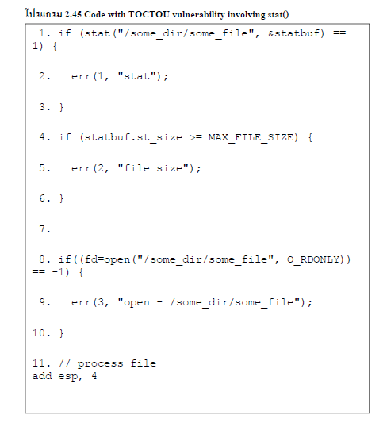

| พบมากที่สุดช่องโหว่ของ race-related file ที่เกี่ยวข้องกับกลไกของการ symbolic link ใน UNIX ซึ่ง symbolic link เป็นรายการของไดเรกทอรี่ที่ใช้อ้างอิงแฟ้มเป้าหมายหรือไดเร็กทอรี่ ช่องโหว่ symlink จะเกี่ยวกับการเขียนโปรแกรมเพื่อใช้อ้างอิงชื่อไฟล์ที่จะรวมใน symlink และ ช่องโหว่ที่พบมากที่สุด symlink จะเกี่ยวข้องกับเงื่อนไขของ TOCTOU ซึ่ง ช่องโหว่ TOCTOU อาจจะมีการเรียกใช้ access() ฟังก์ชัน ตามด้วย fopen() ที่แสดงใน โปรแกรม 2.45 แสดงให้เห็นถึง TOCTOU ที่สามารถที่จะนำไปสู่ช่องโหว่ symlink ซึ่งโค้ดนี่ stats /some_dir/some_file และ การเปิดไฟล์สำหรับอ่านถ้ามันไม่ได้มีขนาดใหญ่เกินไป ซึ่งการตรวจสอบ TOCTOU จะเกิดขึ้นกับการเรียก stat() บนบรรทัดที่ 1 และ TOCTOU จะใช้เรียกฟังก์ชัน fopen() บนบรรทัดที่ 8 | ||
|

|
||